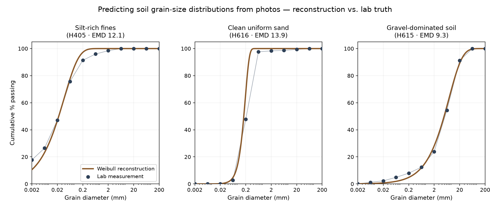
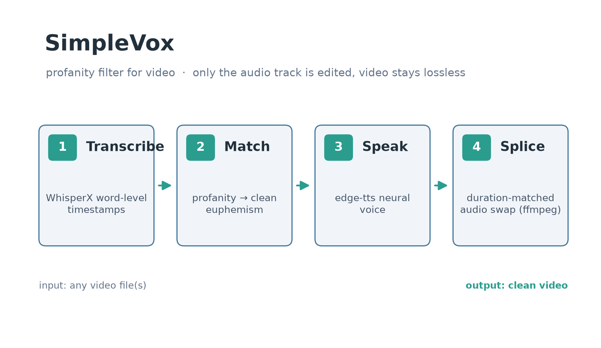
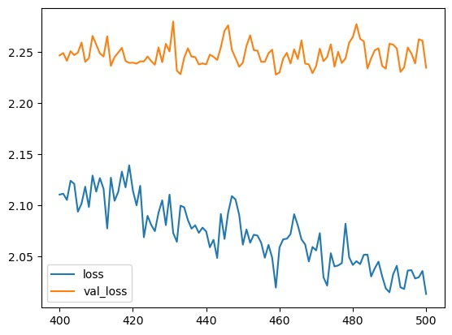
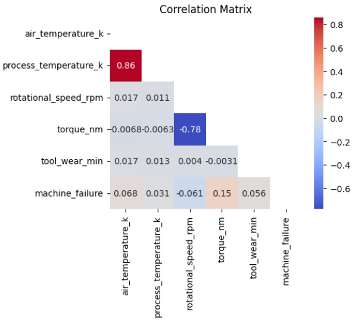

My entry in the GRID 2026 Kaggle competition hosted by BOKU University (Vienna): predict
the full cumulative grain-size distribution of a soil sample from photographs of its surface.
My submission currently sits top 5 (4th) on the public leaderboard out of an
international field. Along the way I verified that a two-parameter Weibull family reconstructs
lab-measured curves down to single-digit EMD, built camera-invariant image features validated
with leave-one-out cross-validation, recovered physical pixel scale from EXIF metadata,
calibrated against the host team's published reference model, and reverse-engineered the
leaderboard's aggregate scoring behavior through carefully designed probe submissions.
A language-learning app for studying vocabulary from song lyrics. Each song is a self-contained
HTML flashcard deck — flip cards, studied-tracking, progress export — with zero build step and
zero server. The same codebase ships as an offline Android app: a Kotlin WebView wrapper
bundles the entire site into an APK with no INTERNET permission, and a GitHub Actions workflow
builds and signs a release automatically on every version tag.

An open-source Python tool that removes profanity from any video. WhisperX supplies word-level
timestamps, each flagged word is matched to a clean euphemism, edge-tts generates the
replacement audio in a neural voice, and ffmpeg splices it back in duration-matched — while the
video stream itself stays lossless. It is the third generation of my audio-censoring pipeline
family (after audiobook-censor-pipeline and revox), simplified to run with no API keys, no
tokens, and no self-hosted servers.

As part of a kaggle machine learning competition, I was given tabular training data which consisted of sixty four columns of 1s and 0s representing the presence of symptoms ranging from back pain to nose bleeding. Instructions were asked to predict which of the 13 possible diseases was present for each of the 300 row in the test data. Iterations of my solution involved a deep neural network and a random forest classifier model which were trained on data which I cleaned and feature engineered. My best solution however was obtained using the open source framework developed by Yandex.

Another kaggle competition entry.I learned a lot and got my feet wet with some mixed tabular as well as data in string and float format. My focus was more on data analysis, preparation and feature engineering.